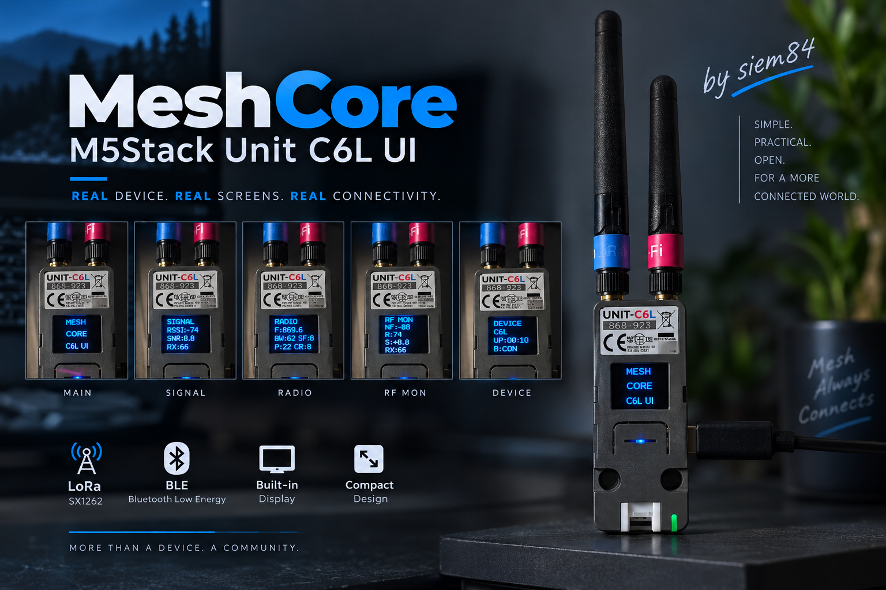

MeshCore adaptation
MeshCore M5Stack Unit C6L UI
A community adaptation of MeshCore Companion that uses the C6L OLED as a real local interface. It shows device and radio information, BLE pairing data and RF Monitor readings directly on the unit.
OLED UIBLE CompanionRF MonitorClockSX1262